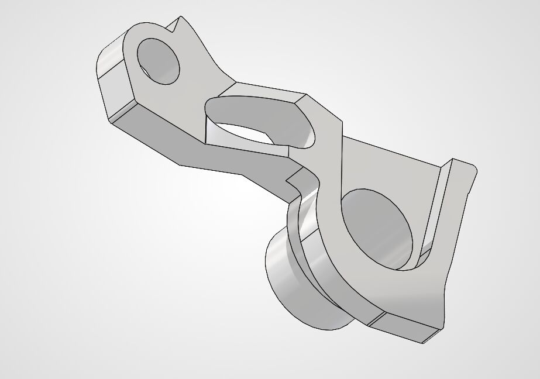
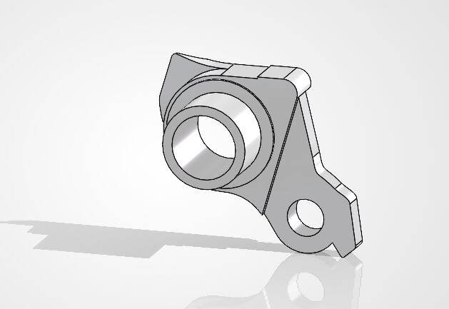
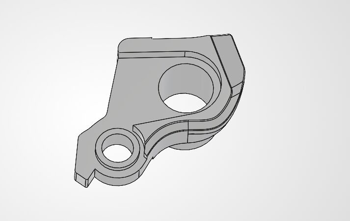
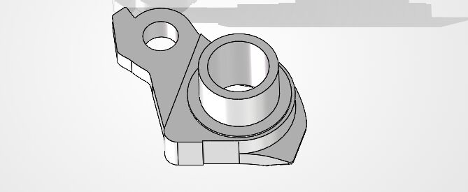
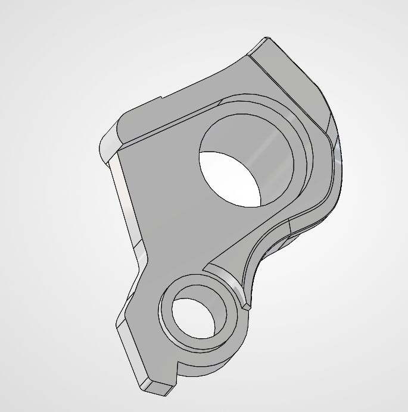

Manufacturing drawings for a carbon frame
2D SolidWorks drawings were prepared to specify the frame dimensions that brake, drivetrain, and cockpit components depend on, so that each add-on part interfaces correctly with the frame.
- Dimensions were referenced to datums at the bottom bracket and rear dropouts.
- Critical interfaces, such as brake mounting holes, were held to tight tolerances, while less critical depths and sizes were given wider ones. GD&T callouts communicate this intent to the manufacturer.
- Fork and rear dropouts can deflect while the carbon cures, so these features were given wider tolerances than a machined part would need.
Reverse engineering of the Shimano DH and SRAM UDH
The Shimano direct-mount hanger and the SRAM Universal Derailleur Hanger (UDH) were modeled in SolidWorks from measurements taken with calipers, a protractor, and hand sketches. Both models were then 3D printed to check them against real hardware.






Figure 1. SolidWorks models of the Shimano DH and SRAM UDH replicas.
Outcomes
- Dimensioned manufacturing drawings with GD&T callouts were delivered for the carbon frame.
- Both 3D-printed hanger replicas interfaced correctly with an existing frame and derailleur and were installed on the bike.